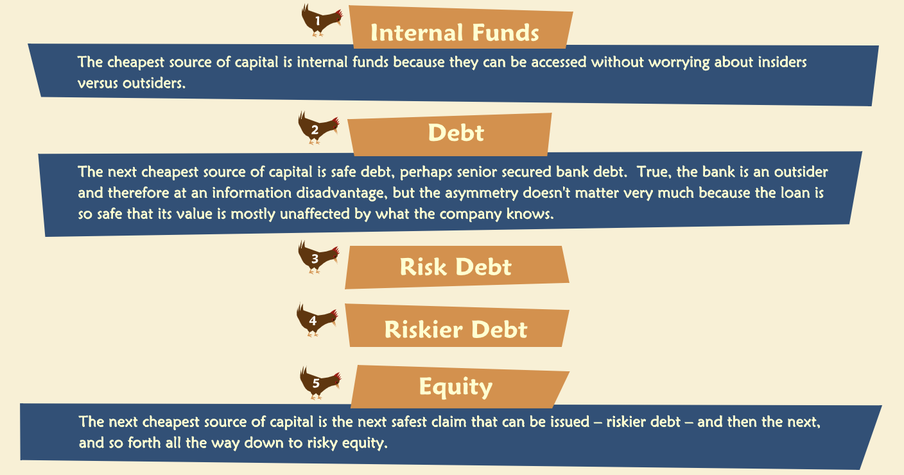

Capital Structure
Contents
Capital Structure¶
“Companies must raise capital to finance their operations — that is, to acquire the fixed assets and working capital required by their business activities. Capital structure refers to the mix of securities, debt, and equity for example, that a company issues for this purpose. In practice, many choices must be made.”
Formulation of the problem¶
“The classic problem of optimal capital structure may be framed in two ways. Managers pick a capital structure to:”
Maximize the value of the firm or
Minimize the cost of capital
The above approaches are equivalent: they lead to the same optimum. “Why? Note that if managers found a way to raise capital more cheaply — i.e., to lower the cost of capital by tinkering with the capital structure — the associated savings would increase the value of the firm. Put differently, once the value of the firm is truly maximized, it must be the case that capital costs are as low as possible — otherwise firm value wouldn’t be maximized.”
Debt¶
“A debt instrument is a contract between borrower and lender that describes each party’s obligations to the other. Generally, the lender is required to provide specific sums to the borrower, often immediately but sometimes at future times depending on circumstances. The borrower makes a binding promise to repay the borrowed amounts at specific times and generally agrees to pay interest on the unpaid principal. The contract may include other promises by both sides — such as loan covenants, promises to keep records, to make regular disclosures, and so forth. But the main idea is that in exchange for receiving a loan, the borrower agrees to pay it back with interest.”
“The loan itself is recorded by the borrowing company on its balance sheet as a liability; for the lender it is an asset. Sometimes the contract between the parties allows the loan to be sold, assigned or transferred by the lender to another party, who receives interest and principal payments in the place of the original lender. An example of this are publicly traded bonds or debentures — they are actually loans with standardized features that permit them to be bought and sold in a market without any day-to-day involvement by the borrowing company.”
Fixed Claim¶
“Debt is often referred to as a fixed claim against a company’s assets. If the borrower fails to make a promised payment when it is due, such a failure is called a default. When default occurs, the lender has certain rights.”
“The details of the bankruptcy process differ from country to country, sometimes substantially. The possibility of bankruptcy is an important consideration for companies in their determination of the optimal mix of debt and equity.”
“Let’s assume company is unable to repay its debt and defaults. Lenders will generally have the right to demand immediate payment in full of all amounts. They may also have the right to seize collateral — specific assets of the borrower that are intended to back up the borrower’s promise to pay. It also is possible that the borrower or lender will make a bankruptcy filing, which initiates legal proceedings to sort out the borrower’s affairs and protect the interests of its lenders. This could result in borrowing company being reorganized or liquidated in whole or in part.”
“Another important feature of corporate debt is limited liability. That is, if a payment comes due and the company can’t make it, the stockholders are not required to reach into their own pockets to bail out their company. Limited liability has an important consequence: a company may default on a debt payment if its assets are worth less than the total amounts owed. In that case, the lenders end up with the assets rather than the shareholders.”
“Debt contracts may have many additional features that we will not analyze here, but we will mention some common ones:”
Seniority: Seniority (or lack of it) reflects the priority assigned to a given debt relative to debts of the same borrower, as agreed in the contracts. A senior debt must be paid before a junior or “subordinated” debt in case of bankruptcy or liquidation.
Security: Secured creditors have legal interests (called “liens”) in specific assets (called “collateral”) designated for the protection of their loans, even in the event of bankruptcy. Creditors are said to be fully secured if the value of the collateral is greater than or equal to the debt amount. Unsecured creditors have no specific collateral and are entitled to a portion of the distribution of the remaining assets once secured claims are satisfied.
Debt covenants: Covenants are rules set forth in a debt contract that impose limits on a borrower’s debts in relationship to its operations or its equity. For example, a debt covenant might stipulate that a company’s debt-to-equity ratio may not exceed 0.5, thus restricting its ability to borrow without earning or issuing more equity. Common covenants include interest coverage ratios, cash, and net working capital ratios.
Callability: A debt security is callable if the borrower has the right to repay it early, before it actually comes due. This gives the borrowing corporation flexibility to rearrange its capital structure as business or capital markets change. Non-callable bonds lack this feature and investors pay somewhat more for them, secure in the knowledge that they can hold an attractive bond until maturity instead of getting their money back early.
Equity¶
“In contrast to debt, common equity is a residual claim. That is, shareholders are entitled to whatever is left over after interest and principal payments have been made. This leftover value is less certain with respect to both amount and timing than contractually-stipulated debt payments. Consequently, equity is said to be riskier than debt. In extreme cases, equity may even turn out to be worthless.”
“Unlike debt, common equity is issued without a fixed term or maturity and is not denominated in any specific currency. This is so even though shareholders obviously pay for their shares in a specific currency and the stock’s price may be quoted in a given currency. But no payout scheme is stipulated in advance. Instead, the board of directors decides quarter-by-quarter to declare a dividend or not, depending on how the company is doing.”
“Common stockholders share the residual earnings of the company once all other claimants have been paid and, via their voting rights, they participate in the governance of the company. Shareholders do not vote on day-to-day operating decisions. Rather, they elect the board and may vote on unusual or substantial actions, such as a sale of the company.”
Financial Leverage and Risk¶
“Financial leverage is created whenever a company borrows money because the debt gives rise to fixed charges — principal and interest payments. Just as fixed operating charges create operating leverage, fixed financial charges create financial leverage.”
“In effect, a company redistributes the inherent risk of its business when it issues debt.”
The shareholders of a company bears the risk of the business.
ROE¶
ROE (return on equity) is also called ROBE (return on beginning equity).
In exchange for bearing more risk, the shareholders receive a higher expected return.
“The primary effect of leverage is to amplify, from the perspective of the shareholders, the ups and downs of the business. The good times feel better and the bad times feel worse than if the company had no debt.”
Irrelevance¶
“Franco Modigliani and Merton Miller published a paper in 1958 which showed that in perfect capital markets with no taxes, the proportion of debt and equity has no effect on the firm’s value. Leverage is irrelevant! Their paper showed that equity’s increased risk due to leverage is exactly offset by the higher expected return, leaving the value to shareholders unchanged. This important result is the starting point for all the current theories of optimal capital structure.”
Arbitrage¶
“Arbitrage is the simultaneous purchase and sale of the same or identical assets for different prices. Such a transaction, if it were possible, generates an instantaneous profit without entailing any risk. Financial economists often invoke the requirement of “no arbitrage” as a necessary characteristic of market equilibrium. That is, a market may not be considered to be in equilibrium if it is possible to earn profits without taking any risk. Certainly it would be wrong to describe such a market as “perfect.” Moreover, investors seeking to profit from such opportunities would by their very actions drive them out of the market — prices would adjust so as to make the arbitrage profits disappear.”
“Miller and Modigliani showed that if their irrelevance proposition (they called it “Proposition 1”) failed to hold, i.e. if the value of the unlevered firm were greater than the value of the levered firm, or vice versa, then an arbitrage opportunity would exist.”
M&M 1¶
” Miller & Modigliani’s (“M&M”) Proposition 1 holds under the following conditions:”
No Taxes: Neither firms nor investors have any tax obligations.
No Costs of Financial Distress: Firms that default on their obligations can reorganize or recapitalize themselves costlessly.
Symmetric Information: Investors and managers all have the same information.
Complete Markets: Investors and companies all have the same opportunities for borrowing and lending.
Invariant Investment Behavior: Firms do not change the assets they invest in or the way they manage them according to their financing choices.
“Under these conditions, the value of the firm is independent of its capital structure, and only depends on the value of its assets. So important is this result that some economists argue that the term “perfect market” should be defined as one for which M&M Proposition 1 holds.”
“In the real world, not all of the M&M conditions hold, and consequently capital structure may indeed matter.”
Relaxing M and M Condition - Taxes¶
“First we relax the condition of No Taxes. In most countries, corporate interest expenses are deductible while corporate dividend payments are not. Consequently, substituting debt for equity in the capital structure, that is, increasing the firm’s leverage, reduces corporate income taxes. This is because interest expenses reduce taxable income and hence, actual taxes paid. The reduction in taxes that comes from deducting interest expenses is called the interest tax shield.”
“When we relax the assumption of no taxes, capital structure may matter because it affects how much of a firm’s EBIT is paid to the government in taxes and is therefore not available to investors.”
Firm Value with Tax Shields¶
“In the presence of conventional corporate tax rules, the value of a levered firm exceeds the value of an all-equity firm because interest tax shields reduce the corporate tax bill. Not only that, but if the levered firm remains levered, it will benefit from interest tax shields this year and next year and the year after that, and so on in perpetuity. Consequently, the value of a levered firm, VL, equals the value of an otherwise identical unlevered firm, VU, plus the present value of expected future interest tax shields, PV(TS).”
Cost of Financial Distress¶
“A corporation can reduce its tax bill by employing leverage in its capital structure. More debt implied lower taxes, which suggested the best policy is to maximize debt. But companies don’t do this. Why not? At least part of the reason is costs of financial distress (CFD), sometimes also called “bankruptcy costs”. Financial distress occurs when a company is unable to honor its debt contract: it defaults, or at least is in danger of doing so. Defaulting on a debt does not necessarily lead to bankruptcy, but it generally does entail some difficult times and associated costs. What kinds of costs? Some costs are direct, such as the fees paid to attorneys, advisors, and lenders to restructure a firm’s obligations. Others are indirect, such as a loss of employees or customers, while the company and its managers are diverted or distracted by financial problems. Good employees and customers are costly to replace. CFD are difficult to measure accurately.”
Separating Costs and Probabilities¶
“At the time a firm decides to borrow, it is not in distress and not planning to encounter it. At that time, financial distress is a contingency — an event that might or might not happen in the future. It is helpful to think of such events in terms of their likelihood of occurrence. Similarly, it is helpful to think of the cost of financial distress in terms of probabilities and present values. We can define the present value of the cost of financial distress, or PV(CFD), as the probability of distress times the present value of the associated costs.”**
“Suppose a jewelry store owner is concerned about the possibility of a robbery. In deciding how best to protect the store and how much to spend on protection, the owner considers the cost of a robbery. This has two components. First is the likelihood of a robbery, and second is the value of the stolen jewels if a robbery actually occurs. The store owner can take different steps to manage each part of the exposure. For example, she could hire a watchman or improve the store’s alarm system to reduce the likelihood of a robbery. To reduce the cost of a robbery, given that it has occurred, she could remove all cash and the most valuable jewels each night before closing.”
“A company can think of managing the present value of the cost of financial distress in the same ways as the jewelry store owner thinks about robberies. Some policies, such as selecting the debt ratio, are intended to affect the likelihood of distress. Others, such as selecting the particular lenders and the covenants may be ways to manage the costs of distress in the event that it actually occurs.”
Direct and Indirect Costs¶
“Costs of distress are the direct and indirect costs that a company incurs when it defaults on its obligations, or scrambles to avoid doing so. Generally, they arise due to, or at least in the presence of conflict between claimants when a firm defaults. In that situation, there often is not enough value to satisfy everyone (otherwise the firm would not be defaulting) and so there are disagreements and contests to claim what limited value is available. Such conflict gives rise to the direct and indirect costs already mentioned, which may be substantial. It is important to point out that we are only interested in those costs that would not have arisen if the company had not borrowed money in the first place. In other words, suppose the trigger for the default is a drop in sales due to a recession; even an all-equity-financed firm will be harmed by a recession. The lost sales and profits due to the recession are not costs of financial distress. What we mean by CFD are the further costs incurred when a levered firm actually defaults.”
“CFD may be higher or lower depending on the nature of a company’s business and the types of assets it employs.”
“Intangible assets such as a knowledge base or brand reputation are more subject to diminution than tangible assets like land, machinery and buildings.”
“When a company’s resources are so small or so illiquid that it is in danger of defaulting, some potential conflicts of interest become actual conflicts. Some of the firm’s activities become zero-sum games: one party’s gain is another’s loss. For example, there is an obvious conflict between the firm as borrower and its lenders. But that’s not all. There may be conflict between lenders — senior versus junior, secured versus unsecured, domestic versus foreign. Or there may also be conflict between large and small shareholders, family and non-family shareholders.”
“Why is such conflict costly? Everyone, the firm itself included, has to spend resources on monitoring, preventing, and resolving disputes and potential disputes. It costs money to make sure you aren’t being taken advantage of by another claimant. For that matter, it costs something just to figure out what your vulnerabilities may be. It costs money to challenge an action someone has already taken or proposes to take; you might have to go to court to do it. And it costs money to figure out the best way to restructure or reorganize the firm so it can go back to tending its business instead of putting out financial fires. Finally, some of the indirect costs we have already mentioned may be exacerbated by this sort of conflict. Your customers might decide it is easier to deal with another firm while you are preoccupied by disputes with your lenders.”
Probability¶
“What affects the likelihood of financial distress? For most firms the single biggest contributor to the probability of distress is the degree of leverage; in other words, the probability of default is positively related to how much you borrow. This is perhaps not surprising, since it was one of the reasons that we previously singled out leverage as a key barometer of a company’s financial health, and one of the reasons we developed ratios such as interest coverage and the debt ratio.”
“Not only does the probability of distress rise as debt rises, it rises faster and faster the more debt there is in the capital structure.”
Tax Shields and CFD - The Static Tradeoff Model¶
One of the simplest model of capital structure is Static Tradeoff Model.
“Static Tradeoff Model considers what happens when two of the M&M conditions are relaxed in conformance with the real world. In a world with both taxes and costs of financial distress, we trade off the benefits of one against the costs of the other.”
“Consider what happens to the market value of the firm as we increase the amount of debt in its capital structure. First, suppose that the M and M conditions hold. In that case, the value of a levered firm is the same as the value of an unlevered firm. Graphically, we have a horizontal line, because leverage does not affect value. Next, if we allow for taxes, the value of the levered firm rises in a straight line. This is because the present value of tax shields is, for a simple perpetuity, D times t. So we have a line sloping upward with slope equal to the tax rate. Finally, when we consider costs of financial distress, we get a curve that begins on the vertical axis, slopes upward at a rate less than t, and finally turns over and begins to slope downward. Where this curve reaches its highest point corresponds to the optimal amount of debt according to the static tradeoff model. The Static Tradeoff Model gives a unique interior optimum. That is, according to the model, the optimal capital structure for most firms is neither 100% equity nor 100% debt. In this simple model the optimum occurs at the point where the marginal benefit of interest tax shields equals the marginal cost of financial distress.”

Limitations¶
“The Static Tradeoff Model is consistent with some of what we observe about real capital structures, but only at a very basic level. For example, it does appear to be true that companies in industries with lots of tangible assets do tend to borrow more than those in industries characterized by lots of intangible assets. But we also observe inter- and intra-industry differences in debt levels that are clearly inconsistent with the model. Nor does the model do a good job of explaining how and why capital structures change over time or how they vary across countries.”
“We have probably overestimated the present value of interest tax shields. There are several reasons for this. First, we have ignored investors’ personal taxes, which could affect how markets price corporate bonds and probably reduce the apparent corporate tax advantage of debt. For example, if the government taxed investors’ income from owning corporate bonds more highly than their income from owning stocks, then some of the taxes saved by corporations would be offset by higher taxes paid by investors. Investors would recognize this and demand to be compensated with higher interest rates. That in turn would reduce the value to the corporation of the interest tax shields. This makes sense in theory, but it is very hard to estimate how large the effect is in reality.”
“Another reason we may have overestimated the value of interest tax shields is that we have ignored other ways to save taxes that don’t require leverage and therefore may not entail costs of financial distress - depreciation tax shields and investment tax credits, for example. If a company can reduce or eliminate its taxes by other means, then it will not avail itself of interest tax shields to the extent predicted by the model.”
“The measurement problem alluded to earlier for CFD raises another serious practical limitation. It means that even though the model confirms the existence of a unique optimal capital structure, we can’t actually locate that optimum for a real company. If a company can’t locate the optimum, the company doesn’t know whether it actually is obeying the model and neither do we.”
Alternative Models¶
“Partly because of the inadequacies of the Static Tradeoff Model, other models have been developed. In general, they are more advanced. First, all of them are due to some departure from the M&M conditions. Second, though some have led to interesting insights about corporate behavior and some have a measure of empirical support, none satisfactorily explains all we observe in real-world capital structures. This continues to be an area of active research.”
Pecking Order Hypothesis¶
“One such model derives from an assumption of asymmetric information. That is, insiders such as managers and large shareholders are assumed to know more about a company than outsiders. But outsiders know that they know less, so they are reluctant to buy risky securities from the company when the company is trying to raise new money.”
“The basic idea is that outsiders will charge more for capital when they think they are at an information disadvantage, and they will do this even if the company is not actively trying to exploit its advantage.”
“An outsider, such as a stockholder, might think that if managers are willing to sell equity at the proposed offer price, then the price must be too high (or they wouldn’t do it). Therefore, the outsiders should not be willing to buy, at least not without charging a higher return, to protect themselves.”
“Some outsiders, namely lenders and bondholders, are less worried about investing in the company’s debt (so long as the debt is fairly safe). Why? They might think that the company can’t exploit its information advantage as easily by issuing a fixed claim — a fixed claim, after all, doesn’t fluctuate very much in value no matter what the insiders’ secret information is.”
“Outsiders’ reluctance to buy risky securities lest insiders exploit their information advantage gives rise to a hierarchy or “pecking order” among sources of funds. The Pecking Order theory says that in the presence of information asymmetries, firms prefer to access funding sources in the following order:” 
“One of the most interesting features of the Pecking Order Hypothesis is that unlike the Static Tradeoff model, it does not imply a unique optimal capital structure. Instead, it prescribes an optimal choice each time the company needs to raise funds. But the choice depends only indirectly, if at all, on the company’s current capital structure.”
“To see the contrast between predictions made by the Static Tradeoff Model on the one hand and the Pecking Order on the other, consider what each says about the behavior of more profitable companies. Static Tradeoff says that such companies have an obvious need to shield their high profits from tax, and therefore will tend to lever up. The Pecking Order says that such companies may have ample sources of internal funds and will not resort to expensive external financing and may therefore have lower debt ratios. Pecking Order theories do explain some behavior that the Static Tradeoff Model cannot. However, the Pecking Order does not perform as well for small, young, and/or fast-growing companies.”
Agency Costs¶
“Agency costs refer to costs that arise when someone (a “principal”) has to rely on someone else (an “agent”) to get something done. This is costly because the agent has a built-in conflict unless his or her interests are identical with the principal’s interests, which is rare. So maybe the agent doesn’t work hard enough, or pays less attention, or even steals from the principal. To avoid this, the principal has to incur some kind of costs — monitoring, or auditing, or even actual theft.”
“There are many analogs to the principal-agent relationship in companies. One of the most obvious ones is shareholders (principals) hiring managers (agents) to run things on their behalf. It turns out that the corresponding agency costs may be affected by the company’s capital structure.”
“For example, suppose managers have a natural tendency to want to grow the company by investing, even when doing so is not profitable, simply because it gives them more to manage. Higher leverage can attenuate this temptation by limiting the cash flow available for making investments. Lower leverage may make the managers’ tendency worse, because not only are they not using up cash flow for debt service, but they may have unutilized borrowing capacity as well, which gives them even more money to invest in growth.”
Product Market Models¶
“Another class of models of capital structure comes from relaxing the M&M condition that day-to-day management of the business is invariant with respect to capital structure. Some of these models are complex and involve game theory. But their spirit is this: that beyond the obvious problem of how to raise capital, capital structure may help a firm defend and exploit a profitable product market position by deterring competitors or would-be competitors.”
“Consider a company that has cultivated a very profitable market niche; so profitable, in fact, that other firms may be tempted to enter the same niche, which would erode margins. As a warning to such would-be competitors, our incumbent firm might signal its intention of fighting any entry with, say, price wars or legal battles. To back up the implied threat, it may make a show of how great its potential resources are, such as cash and ready lines of credit. In contrast the threat may not be credible if the incumbent has already used its debt capacity. This is an ad hoc story, to be sure, rather than a formal model, but it implies a low debt ratio for the incumbent for reasons that have nothing to do with taxes or costs of financial distress.”
Control and Governance Issues¶
“Sometimes a company’s capital structure may be an artifact of other choices it has made.”
Payout Policy¶
“Payout policy is certainly related to capital structure choice, and in a way is the opposite of the securities issuance problem. When companies issue debt or equity they are looking to bring money into the firm. Sometimes they need or want to do the opposite — get money back out of the firm and into the hands of investors, usually shareholders.”
“The two main ways to get cash out to shareholders are to pay dividends and to buy back common stock. From a company’s perspective, these two actions are virtually equivalent: they both reduce cash and they both reduce shareholders’ equity, and they do so without affecting anything else (ignoring for the moment any signaling effects associated with the choice of one action over the other). However, at the shareholder level, the higher taxation of dividends compared to capital gains makes repurchases potentially more advantageous. First, let’s show that without taxes shareholders are indifferent between dividends or share repurchases.”
“If investors pay higher taxes on dividends than on capital gains, which is usually the case, investors will prefer repurchase plans over dividend payouts.”
Evidence¶
“Tax authorities have long understood the tax advantage, and in some countries will impute a “dividend” and impose the associated tax either on the company or its shareholders, even if the payout in question took the form of a share repurchase. In other countries, public companies are simply prohibited from repurchasing their own stock (this has to do with concerns about stock price manipulation in addition to tax optimization). In the United States it is not uncommon for companies to use dividends as a way to make relatively small but steady payments to shareholders and to employ share repurchases for larger, less frequent payouts.”
“In general, mature companies with relatively slow growth tend to pay more dividends, while younger, faster-growing companies pay little or nothing. This is due at least in part to the simple fact that young, growing concerns need large amounts of financing — they are concerned about getting money into the company, rather than getting it out — while mature companies are more likely to produce excess cash. In countries or industries where operations are less transparent, a regular dividend payout may provide investors with a tangible signal of the company’s continuing healthy condition.”
“Because investors sometimes interpret dividends as a signal, companies tend to smooth them over time — to avoid sending a confusing signal — whereas they allow repurchases vary with economic fluctuations.”